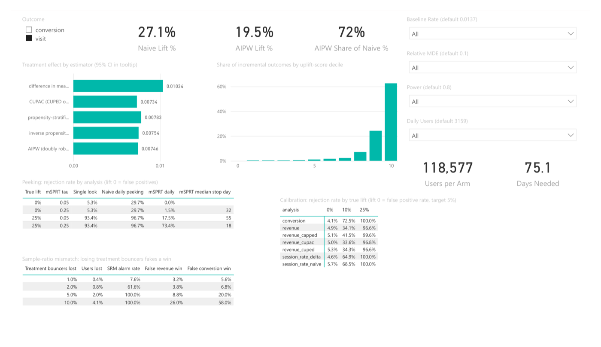
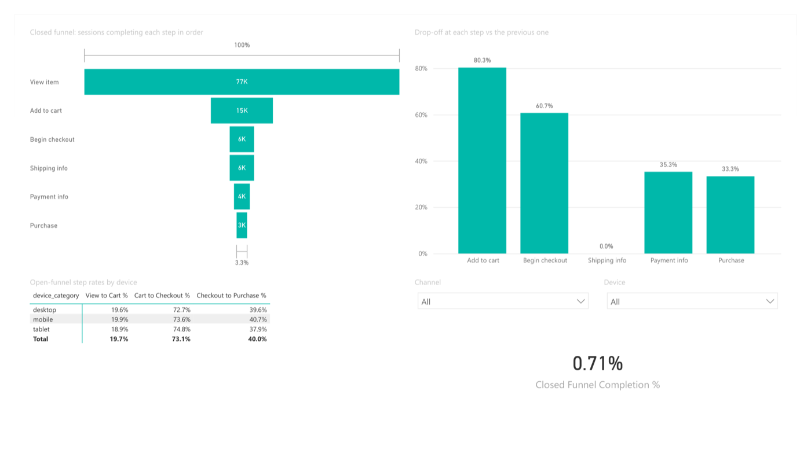
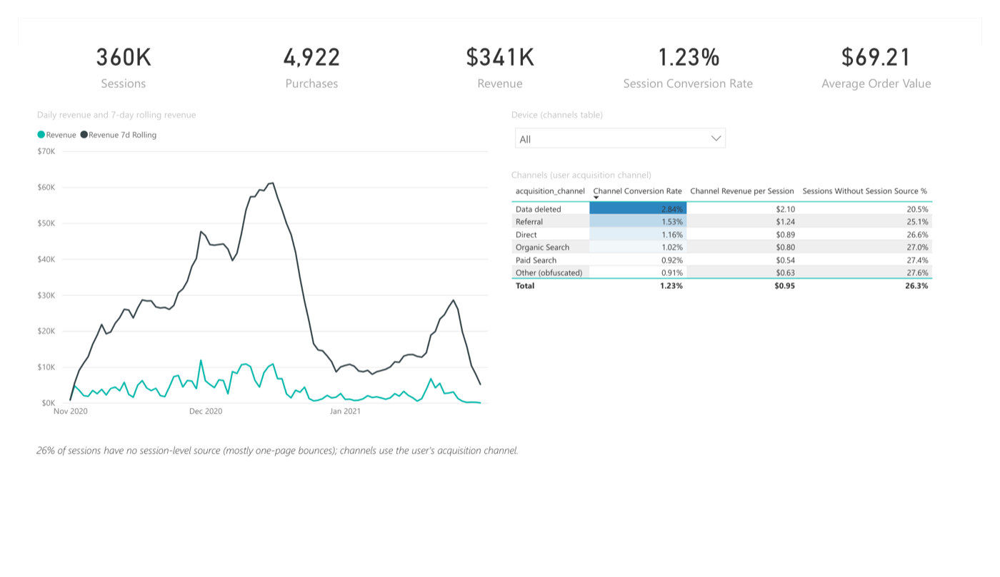
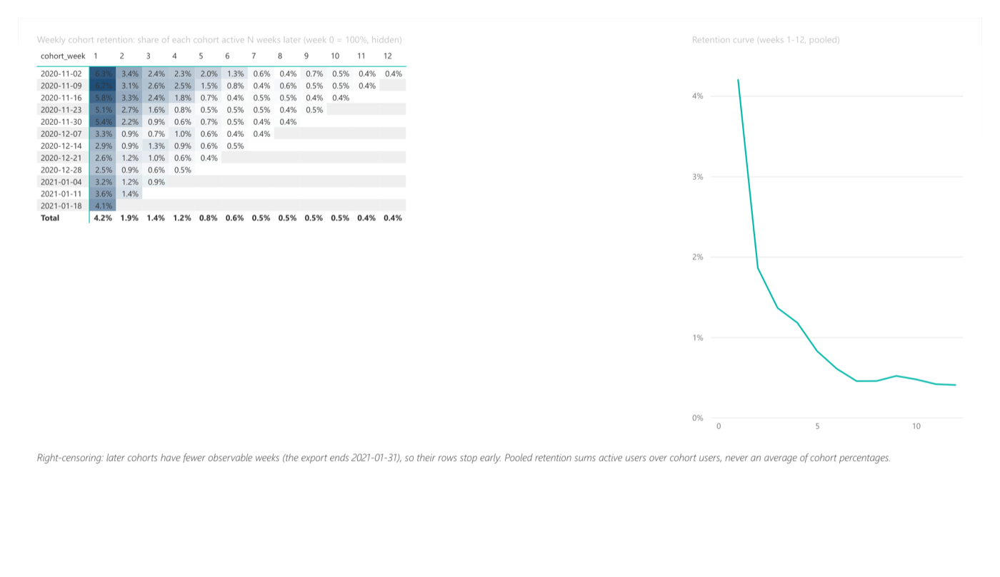
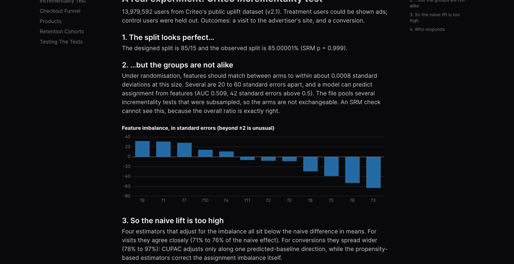

Data · 03 / 04 · BigQuery · dbt · Statistics
Product Analytics & A/B Testing
Google's GA4 store data modelled in BigQuery, and an A/B testing toolkit tested on thousands of simulated experiments before reading out a real 14M-user one.
- BigQuery
- dbt
- SQL
- Python
- SciPy
- scikit-learn
- Power BI
- Evidence
Why I built this
Product teams ship or kill features on A/B test results. Peek at the dashboard every morning, pick a noisy metric, or miss that the groups weren't comparable, and you'll launch things that do nothing and kill things that work.
Can you actually trust an A/B test result? I wanted to build the statistics myself, prove they behave on thousands of fake experiments, and then read out a real one where the obvious answer turned out to be wrong.
What I built
Google's public GA4 ecommerce export modelled in BigQuery with dbt: sessions, checkout funnel, retention cohorts, channels and products, with tests that reconcile revenue against an independent deduplication of the raw events.
Then an experimentation toolkit (SRM checks, power, CUPED, the delta method, sequential tests, doubly robust estimation), validated by simulation on real GA4 users before reading out Criteo's 14-million-user randomised ad experiment. Results are published on an Evidence dashboard and in a Power BI report with a sample-size calculator.
How it works
The dashboard is a static Evidence site, rebuilt and deployed to GitHub Pages by CI. The same marts and results also feed a 5-page Power BI report.
How it stays correct
dbt tests reconcile purchases against a separate deduplication of the raw events.
A/A simulations on real users: false positives between 4.1% and 5.7%.
Daily looks push false positives to 29.7%; mSPRT keeps them at 1.5%.
Criteo's split passed SRM but covariates were imbalanced, so four adjusted estimators replace the naive lift.
Measured
- GA4
- 360,129 sessions, 4,922 purchases; 314 duplicate purchases worth 6.3% of revenue caught
- Metric choice
- Detecting +10%: revenue per user needs 190 days, add-to-cart rate 17
- Criteo
- Naive visit lift +27.1%; doubly robust +19.5% (four estimators agree, +19.2% to +20.5%)
- Tests
- 33 Python tests, 93% coverage; sqlfluff and dbt parse in CI




